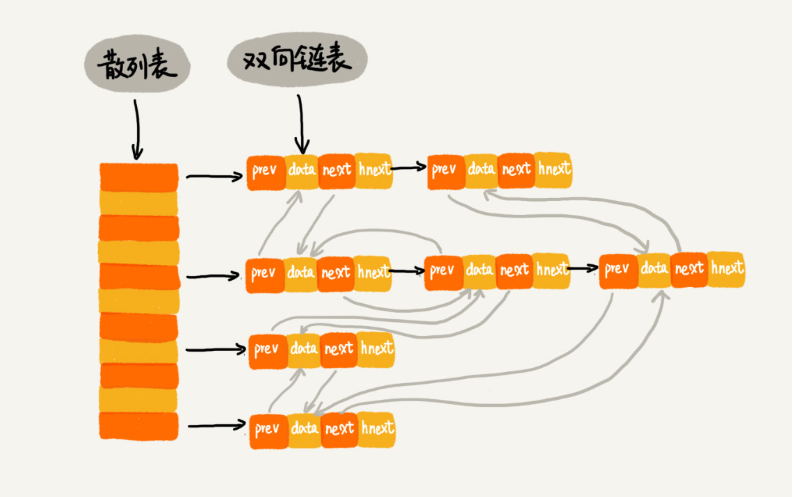

本文最后更新于：2020年8月17日 凌晨
文章对常用的数据结构做归纳总结。
写在前面
- 时间和空间的转换，两者之间平衡的意识；
- 掌握常用的基础数据结构，包括内部实现、常用操作的时间和空间复杂度；
- 针对不同的场景，能够选择较为合适的数据结构；
常用数据结构
数组
用一组连续的内存空间，存储一组具有相同类型的数据；
支持随机访问，但插入、删除操作比较低效；
操作
随机访问
一维寻址公式：a[k]_address = base_address + k * type_size；
二维寻址公式，对于 m*n 的数组：a[i][j]_address = base_address + (i*n+j) * type_size；
所以，根据下标随机访问的时间复杂度为 O(1)；
插入操作
- 开头插入：最坏时间复杂度是O(n)；
- 平均情况时间复杂度： (1+2+…n)/n = O(n)；
- 在中间第 k 位插入：时间复杂度可以达到是O(1)；
- 如果数组中的数据是有序的，在某个位置插入一个新的元素时，就必须搬移 k 之后的数据，但是，
- 如果数组中存储的数据没有任何规律，数组只是被当作一个存储数据的集合。这种情况下，如果要将某个数据插入到第 k 个位置，为了避免大规模的数据搬移，还有一个简单的办法，直接将第 k 位的数据搬移到数组元素的最后，把新的元素直接放入第 k 个位置；
- 在末尾插入：时间复杂度是O(1)；
删除操作
- 开头删除：最坏时间复杂度O(n)；
- 平均情况时间复杂度O(n)；
- 在中间第 k 位删除：每次删除操作只记录数据已被删除。当没有更多空间时，才触发执行真正的删除操作；
- 在某些特殊场景下，并不一定要求数组中数据的连续性。如果将多次删除操作集中在一起执行，删除的效率会有所提高；
- JVM 的标记清除垃圾回收算法的核心思想应用了这个思想；
- 在末尾删除：时间复杂度O(1)；
应用
平时的业务开发，使用编程语言提供的容器类比较方便，有助于提高开发效率；
底层的开发适合直接使用数组，更加高效；
链表
- 通过指针将一组零散的内存块串联起来使用；
- 插入、删除数据快；
单链表
查找
根据指针一个节点一个节点依次遍历，直到找到目标节点。
插入和删除
只要考虑相邻节点的指针改变，时间复杂度是O(1)。
循环链表
一种特殊的单链表，尾节点指针指向链表的头节点。
双向链表
支持两个方向，后继指针 next 指向后面的节点，前驱指针 pre 指向前面的节点；
查找、插入、删除的效率都比单链表高；
删除“值等于给定值”的节点
从头节点开始遍历，依次对比，直到找到值等于给定值的节点，通过指针操作将其删除；
时间复杂度为O(n)；
删除给定指针指向的节点
- 对于单链表，已经知道了要删除的节点，但是要删除某个结点 q 需要知道其前驱结点，而单链表不可以直接获取前驱结点，所以为了找到前驱结点，要从头结点开始遍历链表，直到 p->next=q，说明 p 是 q 的前驱结点。时间复杂度为O(n)；
- 对于双向链表，因为节点已经保存了前驱结点的指针，不需要像单链表那样遍历。所以，O(1) 的时间复杂度就可以完成操作；
应用
链表适合插入、删除操作比较频繁的场景；
双向链表比单链表的插入、删除等操作简单、高效，适用在很多场景；
循环链表适合要处理的数据具有环形结构的特点，比如约瑟夫环问题；
栈
一种操作受限的线性表，只允许在一端插入和删除数据，特点是FILO。
实现
只需要一个栈顶指针；
用数组实现的栈叫顺序栈，用链表实现的栈叫链式栈；
顺序栈
/**
* 基于数组实现的顺序栈
*
*/
public class ArrayStack {
private String[] items; // 数组
private int count; // 栈中元素个数
private int n; // 栈的大小
// 初始化数组，申请一个大小为n的数组空间
public ArrayStack(int n) {
this.items = new String[n];
this.n = n;
this.count = 0;
}
// 入栈操作
public boolean push(String item) {
// 数组空间不够了，直接返回false，入栈失败。
if (count == n) return false;
// 将item放到下标为count的位置，并且count加一
items[count] = item;
++count;
return true;
}
// 出栈操作
public String pop() {
// 栈为空，则直接返回null
if (count == 0) return null;
// 返回下标为count-1的数组元素，并且栈中元素个数count减一
String tmp = items[count-1];
--count;
return tmp;
}
}链式栈
/**
* 基于链表实现的链式栈
* 注意：通俗的理解，节点的next指针是指向“底下”的节点，是指向下面的节点
*/
public class StackBasedOnLinkedList {
private Node top = null;
public void push(int value) {
Node newNode = new Node(value, null);
// 判断是否栈空
if (top == null) {
top = newNode;
} else {
newNode.next = top;
top = newNode;
}
}
/**
* 这里用-1表示栈中没有数据。
*/
public int pop() {
if (top == null) return -1;
int value = top.data;
top = top.next;
return value;
}
public void printAll() {
// 用一个临时变量
Node p = top;
while (p != null) {
System.out.print(p.data + " ");
p = p.next;
}
System.out.println();
}
private static class Node {
private int data;
private Node next;
public Node(int data, Node next) {
this.data = data;
this.next = next;
}
public int getData() {
return data;
}
}
}操作
- 不管是顺序栈还是链式栈，存储数据只需要一个大小为 n 的数组。在入栈和出栈过程中，只需要一两个临时变量存储空间，所以空间复杂度是 O(1)；
- 注：这里存储数据需要一个大小为 n 的数组，并不是说空间复杂度就是 O(n)。因为这 n 个空间是必须的，无法省掉。所以空间复杂度，是指除了原本的数据存储空间外，算法运行还需要额外的存储空间；
- 顺序栈还是链式栈，入栈、出栈只涉及栈顶个别数据的操作，所以时间复杂度都是 O(1)；
动态扩容的栈
尽管链式栈的大小不受限，但要存储 next 指针，内存消耗相对较多。
实现
底层依赖一个支持动态扩容的数组；
栈满之后，要申请一个更大的数组，将原来的数据搬移到新的数组中；
入栈
最好情况时间复杂度是O(1)；
最坏情况时间复杂度是O(n)；
均摊时间复杂度是O(1)；
出栈
时间复杂度是O(1)。
应用
函数调用栈
作为一个比较基础的数据结构，应用场景较多。一个比较经典的应用场景就是函数调用栈。栈可以用于在函数调用时保存临时变量，为什么函数调用要用“栈”来保存临时变量呢？用其他数据结构不行吗？
- 其实，不一定非要用栈来保存临时变量，只不过函数调用符合后进先出的特性，用栈这种数据结构来实现，是最顺理成章的选择；
- 从调用函数进入被调用函数，对于数据来说，变化的是什么呢？是作用域。所以根本上，只要能保证每进入一个新的函数，都是一个新的作用域就可以。而要实现这个，用栈就非常方便。在进入被调用函数的时候，分配一段栈空间给这个函数的变量，在函数结束的时候，将栈顶复位，正好回到调用函数的作用域内；
操作系统给每个线程分配了一块独立的内存空间，这块内存被组织成“栈”这种结构，用来存储函数调用时的临时变量。每进入一个函数，就会将临时变量作为一个栈帧入栈，当被调用函数执行完成，返回之后，将这个函数对应的栈帧出栈。
int main() {
int a = 1;
int ret = 0;
int res = 0;
ret = add(3, 5);
res = a + ret;
printf("%d", res);
reuturn 0;
}
int add(int x, int y) {
int sum = 0;
sum = x + y;
return sum;
}
表达式求值
算术表达式只包含加减乘除四则运算。一个保存操作数的栈，另一个是保存运算符的栈。
- 从左向右遍历表达式，当遇到数字，就直接压入操作数栈；
- 当遇到运算符，就与运算符栈的栈顶元素进行比较，
- 如果比运算符栈顶元素的优先级高，就将当前运算符压栈；
- 如果比运算符栈顶元素的优先级低或者相同，从运算符栈中取栈顶运算符，从操作数栈的栈顶取 2 个操作数，然后进行计算，再把计算完的结果压入操作数栈，继续比较；
括号匹配
表达式中只包含三种括号，圆括号 ()、方括号[]和花括号{}，可以任意嵌套。给定一个包含三种括号的表达式字符串。用栈可以解决检查它的合法性。
- 用栈来保存未匹配的左括号，从左到右依次扫描字符串。当扫描到左括号时，则将其压入栈中；
- 当扫描到右括号时，从栈顶取出一个左括号，
- 如果能够匹配，比如“(”跟“)”匹配，“[”跟“]”匹配，“{”跟“}”匹配，则继续扫描剩下的字符串；
- 如果扫描的过程中，遇到不能配对的右括号，或者栈中没有数据，则说明为非法格式；
- 当所有的括号都扫描完成之后，如果栈为空，则说明字符串为合法格式；否则，说明有未匹配的左括号，为非法格式；
实现浏览器的前进、后退功能
使用两个栈，X 和 Y，把首次浏览的页面依次压入栈 X，
- 当点击后退按钮时，再依次从栈 X 中出栈，并将出栈的数据依次放入栈 Y；
- 当点击前进按钮时，依次从栈 Y 中取出数据，放入栈 X 中；
- 当栈 X 中没有数据时，就说明没有页面可以继续后退浏览了；当栈 Y 中没有数据，那就说明没有页面可以点击前进按钮浏览了；
队列
一种操作受限的线性表数据结构，特性是FIFO。
实现
需要两个指针，head指针指向队头，tail指针指向队尾。
顺序队列
用数组实现的队列；
出队时不用搬移数据。如果没有空闲空间，只需要在入队时再集中触发一次数据的搬移操作；
队满的判断条件是 tail == n，队空的判断条件是 head == tail。
/**
* 基于数组实现的队列
*
*/
public class ArrayQueue {
// 数组：items，数组大小：n
private String[] items;
private int n = 0;
// head表示队头下标，tail表示队尾下标
private int head = 0;
private int tail = 0;
// 申请一个大小为capacity的数组
public ArrayQueue(int capacity) {
items = new String[capacity];
n = capacity;
}
// 入队
public boolean enqueue(String item) {
// 如果tail == n 表示队列已经满了
if (tail == n) return false;
items[tail] = item;
++tail;
return true;
}
// 出队
public String dequeue() {
// 如果head == tail 表示队列为空
if (head == tail) return null;
// 为了让其他语言的同学看的更加明确，把--操作放到单独一行来写了
String ret = items[head];
++head;
return ret;
}
}以上的不停地入队、出队操作，head 和 tail 都会持续往后移动。当 tail 移动到最右边，即使数组中还有空闲空间，也无法继续往队列中添加数据了。
一个可能的解决方案：在出队时可以不用搬移数据。如果没有空闲空间，只需要在入队时，再集中触发一次数据的搬移操作。借助这个思想，出队函数 dequeue() 保持不变，改造一下入队函数 enqueue() 的实现，就可以解决刚才的问题。
// 入队操作，将item放入队尾
public boolean enqueue(String item) {
// tail == n表示队列末尾没有空间了
if (tail == n) {
// tail ==n && head==0，表示整个队列都占满了
if (head == 0) return false;
// 数据搬移
for (int i = head; i < tail; ++i) {
items[i-head] = items[i];
}
// 搬移完之后重新更新head和tail
tail -= head;
head = 0;
}
items[tail] = item;
++tail;
return true;
}链式队列
用链表实现的队列。基于链表的实现，需要两个指针：
- head 指针指向链表的第一个结点；
- tail 指针指向最后一个结点；
- 入队时：tail->next= new_node, tail = tail->next；
- 出队时：head = head->next；
/**
* 基于链表实现的队列
*
*/
public class QueueBasedOnLinkedList {
// 队列的队首和队尾
private Node head = null;
private Node tail = null;
// 入队
public void enqueue(String value) {
if (tail == null) {
Node newNode = new Node(value, null);
head = newNode;
tail = newNode;
} else {
tail.next = new Node(value, null);
tail = tail.next;
}
}
// 出队
public String dequeue() {
if (head == null) return null;
String value = head.data;
head = head.next;
if (head == null) {
tail = null;
}
return value;
}
public void printAll() {
Node p = head;
while (p != null) {
System.out.print(p.data + " ");
p = p.next;
}
System.out.println();
}
private static class Node {
private String data;
private Node next;
public Node(String data, Node next) {
this.data = data;
this.next = next;
}
public String getData() {
return data;
}
}
}循环队列
用数组来实现队列的时候，在 tail==n 时，会有数据搬移操作，这样入队操作性能就会受到影响。可以使用逻辑上数组首尾相连成环的循环队列解决这个问题。
实现
确定好队空和队满的判定条件：
- 队空：head == tail；
- 队满：(tail + 1) % n == head；
/**
* 基于数组实现的循环队列
*
*/
public class CircularQueue {
// 数组：items，数组大小：n
private String[] items;
private int n = 0;
// head表示队头下标，tail表示队尾下标
private int head = 0;
private int tail = 0;
// 申请一个大小为capacity的数组
public CircularQueue(int capacity) {
items = new String[capacity];
n = capacity;
}
// 入队
public boolean enqueue(String item) {
// 队列满了
if ((tail + 1) % n == head) return false;
items[tail] = item;
tail = (tail + 1) % n;
return true;
}
// 出队
public String dequeue() {
// 如果head == tail 表示队列为空
if (head == tail) return null;
String ret = items[head];
head = (head + 1) % n;
return ret;
}
}缺点
队列满时，tail指向的位置没有存储数据，所以循环队列会浪费一个数组的存储空间。
阻塞队列
在队列的基础上增加了阻塞操作；
队列为空时，从队头取数据会被阻塞；
并发队列
线程安全的队列。
实现
方式一：直接在enqueue()、dequeue() 上加锁，锁粒度大并发度会比较低下，同一时刻仅允许一个存取数操作。
方式二：利用 CAS 原子操作，可以实现非常高效的并发队列。
应用
- 平时的业务很少直接用到队列；
- 一些具有特殊特性的队列应用比较广泛，比如循环队列、阻塞队列和并发队列；
- 循环队列比链式队列应用更加广泛；
- 高性能队列 Disruptor、Linux环形缓存，都用到了循环并发队列；
- Java concurrent 并发包利用 ArrayBlockingQueue 来实现公平锁等；
二叉树
每个节点最多有两个子节点，即左子节点和右子节点。
相关概念
节点高度 = 节点到叶子节点的最长路径（边数）；
节点深度 = 根节点到这个节点所经历的边的个数；
节点层数 = 节点深度 + 1；
树的高度 = 根节点的高度；
分类
满二叉树：叶子节点全都在最底层，除叶子节点之外，每个节点都有左右两个子节点；
完全二叉树：叶子节点都在最底下两层，而且最后一层的叶子节点都靠左排列；
二叉查找树：最大的特点是支持动态数据集合的快速插入、删除、查找操作。树中的任意一个节点，
- 其左子树中的每个节点的值，都要小于这个节点的值；
- 其右子树中的每个节点的值，都要大于这个节点的值；
二叉查找树
BST查找操作
public class BinarySearchTree {
private Node tree;
public Node find(int data) {
Node p = tree;
while (p != null) {
if (data < p.data) p = p.left;
else if (data > p.data) p = p.right;
else return p;
}
return null;
}
public static class Node {
private int data;
private Node left;
private Node right;
public Node(int data) {
this.data = data;
}
}
}BST的插入操作
二叉查找树的插入过程有点类似查找操作。新插入的数据一般都是在叶子节点上，所以只需要从根节点开始，依次比较要插入的数据和节点的大小关系。
- 如果要插入的数据比节点的数据大：
- 并且节点的右子树为空，就将新数据直接插到右子节点的位置；
- 如果不为空，就递归遍历右子树，查找插入位置；
- 如果要插入的数据比节点数值小：
- 并且节点的左子树为空，就将新数据直接插到左子节点的位置；
- 如果不为空，就递归遍历左子树，查找插入位置；
public void insert(int data) {
if (tree == null) {
tree = new Node(data);
return;
}
Node p = tree;
while (p != null) {
if (data > p.data) {
if (p.right == null) {
p.right = new Node(data);
return;
}
p = p.right;
} else { // data < p.data
if (p.left == null) {
p.left = new Node(data);
return;
}
p = p.left;
}
}
}BST的删除操作
BST的删除操作相对复杂，针对要删除节点的子节点个数的不同，需要分三种情况来处理。
- 如果要删除的节点没有子节点，只需要直接将父节点中，指向要删除节点的指针置为 null。
- 如果要删除的节点只有一个子节点（只有左子节点或者右子节点），只需要更新父节点中，指向要删除节点的指针，让它指向要删除节点的子节点就可以了。
- 如果要删除的节点有两个子节点。那么需要找到这个节点的右子树中的最小节点，把它替换到要删除的节点上。然后再删除掉这个最小节点，因为最小节点肯定没有左子节点。
public void delete(int data) {
Node p = tree; // p指向要删除的节点，初始化指向根节点
Node pp = null; // pp记录的是p的父节点
while (p != null && p.data != data) {
pp = p;
if (data > p.data) p = p.right;
else p = p.left;
}
if (p == null) return; // 没有找到
// 要删除的节点有两个子节点
if (p.left != null && p.right != null) { // 查找右子树中最小节点
Node minP = p.right;
Node minPP = p; // minPP表示minP的父节点
while (minP.left != null) {
minPP = minP;
minP = minP.left;
}
p.data = minP.data; // 将minP的数据替换到p中
p = minP; // 下面就变成了删除minP了
pp = minPP;
}
// 删除节点是叶子节点或者仅有一个子节点
Node child; // p的子节点
if (p.left != null) child = p.left;
else if (p.right != null) child = p.right;
else child = null;
if (pp == null) tree = child; // 删除的是根节点
else if (pp.left == p) pp.left = child;
else pp.right = child;
}BST的其他操作
- 除了插入、删除、查找操作之外，二叉查找树中还可以支持快速地查找最大节点和最小节点、前驱节点和后继节点；
- 二叉查找树除了支持上面几个操作之外，还有一个重要的特性，就是中序遍历二叉查找树，可以输出有序的数据序列，时间复杂度是 O(n)，非常高效。因此，二叉查找树也叫作二叉排序树；
- 支持重复数据的二叉查找树：
- 很多时候，在二叉查找树中存储的是一个包含很多字段的对象。利用对象的某个字段作为键值来构建二叉查找树。对象中的其他字段叫作卫星数据；
散列表与BST
散列表也支持这些操作，且相比于二叉查找树更高效，时间复杂度是 O(1)。思考这两种数据结构的适用场景。
- 散列表中的数据是无序存储的，如果要输出有序的数据，需要先进行排序。BST中序遍历可以在 O(n) 时间复杂度内输出有序的数据序列；
- 散列表扩容耗时很多，而且当遇到散列冲突时，性能不稳定；尽管二叉查找树的性能不稳定，但是在工程中，最常用的平衡二叉查找树的性能稳定，时间复杂度稳定在 O(logn)；
- 尽管散列表的查找等操作的时间复杂度是常量级的，但因为哈希冲突的存在，这个常量不一定比 logn 小，所以实际的查找速度可能不一定比 O(logn) 快。加上哈希函数的耗时，也不一定比平衡二叉查找树的效率高；
- 散列表的构造比二叉查找树要复杂，需要考虑的东西很多。比如散列函数的设计、冲突解决办法、扩容、缩容等。平衡二叉查找树只需要考虑平衡性这一个问题，而且这个问题的解决方案比较成熟、固定；
- 为了避免过多的散列冲突，散列表装载因子不能太大，特别是基于开放寻址法解决冲突的散列表，不然会浪费一定的存储空间；
综合这几点，平衡二叉查找树在某些方面还是优于散列表的，所以，这两者的存在并不冲突。实际的开发过程中，需要结合具体的需求来选择使用哪一个。
存储
链式存储法
顺序存储法
遍历
将所有节点都遍历打印出来。经典的方法有前序遍历、中序遍历和后序遍历。其中，前、中、后序，表示的是节点与它的左右子树节点遍历打印的先后顺序。二叉树的前、中、后序遍历是一个递归的过程。时间复杂度均为O(n)；
- 前序遍历：根->左子树->右子树；
- 中序遍历：左子树->根->右子树；
- 后序遍历：左子树->右子树->根；
堆
- 一个完全二叉树；
- 每一个节点的值都必须大于等于（或小于等于）其子树中的每个节点的值；
存储
完全二叉树比较适合用数组来存储。用数组来存储完全二叉树节省存储空间。通过数组的下标，可以找到一个节点的左右子节点和父节点，而不需要存储左右子节点的指针。假设节点在数组中的下标为 i，那么：
- 其父节点的下标为 i/2；
- 其左子节点的下标为 i∗2；
- 其右子节点的下标为 i∗2+1；
操作
插入一个元素和删除堆顶元素。
基于堆实现排序
- 建堆
- 思路1：从前往后处理数组，并且每个数据插入堆中时，都是从下往上堆化；
- 思路2：从后往前处理数组，并且每个数据都是从上往下堆化
- 第二步：排序
- 堆顶跟最后一个元素交换，把下标为n的元素放到堆顶，通过堆化的方法，将剩下的 n - 1 个元素重新构建成堆；
- 堆化完成之后，取堆顶的元素，放到下标是 n - 1 的位置；
- 一直重复这个过程，直到最后堆中只剩下标为 1 的一个元素，排序工作完成
快速排序与堆排序
堆排序数据访问的方式没有快速排序友好
对于快速排序来说，数据是顺序访问的；
对于堆排序来说，数据是跳着访问的；
- 堆排序中，最重要的一个操作就是数据的堆化。对堆顶节点进行堆化，访问数组的元素对应的下标是跳跃的，快速排序则是局部顺序访问。所以，堆排序对 CPU 缓存是不友好的。
同样的数据，在排序过程中，堆排序算法的数据交换次数多于快速排序
- 排序的时候有序度和逆序度两个概念；
- 对于基于比较的排序算法来说，整个排序过程就是由比较和交换（或移动）这两个基本的操作组成的；
- 快速排序数据交换的次数不会比逆序度多，但是堆排序的第一步是建堆，建堆的过程会打乱数据原有的相对先后顺序，导致原数据的有序度降低。比如，对于一组已经有序的数据来说，经过建堆之后，数据反而变得更无序了；
所以，快速排序比堆排序性能好
堆内容小结
- 堆是一种完全二叉树。它最大的特性是：每个节点的值都大于等于（或小于等于）其子树节点的值。因此，堆被分成了两类，大顶堆和小顶堆；
- 堆中比较重要的两个操作是插入一个数据和删除堆顶元素。这两个操作都要用到堆化；
- 插入一个数据的时候，把新插入的数据放到数组的最后，然后从下往上堆化；
- 删除堆顶数据的时候，把数组中的最后一个元素放到堆顶，然后从上往下堆化；
- 这两个操作时间复杂度都是 O(logn)；
- 堆排序，堆排序包含两个过程：
- 建堆和排序；
- 建堆：将下标从 n/2 到 1 的节点，依次进行从上到下的堆化操作，就可以将数组中的数据组织成堆这种数据结构；
- 排序：迭代地将堆顶的元素放到堆的末尾，并将堆的大小减一，然后再堆化。重复这个过程，直到堆中只剩下一个元素，整个数组中的数据就都有序排列了；
- 优先级队列是一种特殊的队列，优先级高的数据先出队，不像普通的队列那样，先进先出。实际上，堆就可以看作优先级队列，只是称谓不一样罢了；
- Top K 问题可以分为针对静态数据和针对动态数据，只需要利用一个堆，就可以做到非常高效率的查询 Top K 的数据；
- 求中位数实际上还有很多变形，比如求 99 百分位数据、90 百分位数据等，处理的思路都是一样的，即利用两个堆，一个大顶堆，一个小顶堆，随着数据的动态添加，动态调整两个堆中的数据，最后大顶堆的堆顶元素就是要求的数据；
应用
实现优先级队列
队列最大的特性就是先进先出。在优先级队列中，数据的出队顺序不是先进先出，而是按照优先级来，优先级最高的，最先出队。
实现一个优先级队列的方法有很多，但是用堆来实现是最直接、最高效的。这是因为，堆和优先级队列非常相似。一个堆就可以看作一个优先级队列。很多时候，它们只是概念上的区分而已。往优先级队列中插入一个元素，就相当于往堆中插入一个元素；从优先级队列中取出优先级最高的元素，就相当于取出堆顶元素。
优先级队列的应用场景非常多。很多数据结构和算法都要依赖它。比如，赫夫曼编码、图的最短路径、最小生成树算法等等。很多语言都提供了优先级队列的实现，Java 的 PriorityQueue，C++ 的 priority_queue 等。
合并有序小文件
假设有 100 个小文件，每个文件的大小是 100MB，每个文件中存储的都是有序的字符串。希望将这些 100 个小文件合并成一个有序的大文件。
方法一：整体思路有点像归并排序中的合并函数：
- 从这 100 个文件中，各取第一个字符串，放入数组中，然后比较大小，把最小的字符串放入合并后的大文件中，并从数组中删除；
- 假设，这个最小的字符串来自于 a.txt 这个小文件，就再从这个小文件取下一个字符串，放到数组中，重新比较大小，并且选择最小的放入合并后的大文件，将它从数组中删除；
- 依次类推，直到所有的文件中的数据都放入到大文件为止；
- 这里用数组这种数据结构，来存储从小文件中取出来的字符串。每次从数组中取最小字符串，都需要循环遍历整个数组，显然，这不是很高效。
方法二：优先级队列，也可以说是堆：
- 把小文件中取出来的字符串放入到小顶堆中，堆顶的元素就是优先级队列队首的元素，就是最小的字符串；
- 将这个字符串放入到大文件中，并将其从堆中删除；
- 再从小文件中取出下一个字符串，放入到堆中；
- 循环这个过程，就可以将 100 个小文件中的数据依次放入到大文件中；
- 删除堆顶数据和往堆中插入数据的时间复杂度都是 O(logn)，n 表示堆中的数据个数，这里就是 100。该方法比原来数组存储的方式高效；
高性能定时器
假设有一个定时器，定时器中维护了很多定时任务，每个任务都设定了一个要触发执行的时间点。定时器每过一个很小的单位时间（比如 1 秒），就扫描一遍任务，看是否有任务到达设定的执行时间。如果到达了，就拿出来执行。
但是，这样每过 1 秒就扫描一遍任务列表的做法比较低效，主要原因有两点：
- 任务的约定执行时间离当前时间可能还有很久，这样前面很多次扫描其实都是徒劳的；
- 每次都要扫描整个任务列表，如果任务列表很大的话，势必会比较耗时。
针对这些问题，可以用优先级队列来解决：
- 按照任务设定的执行时间，将这些任务存储在优先级队列中，队列首部（也就是小顶堆的堆顶）存储的是最先执行的任务；
- 这样，定时器就不需要每隔 1 秒就扫描遍历任务列表了；
- 取队首任务的执行时间点，与当前时间点相减，得到一个时间间隔 T。这个时间间隔 T 就是，从当前时间开始，需要等待多久，才会有第一个任务需要被执行。这样，定时器就可以设定在 T 秒之后，定时器取优先级队列中队首的任务执行。
- 这样，当前时间点到（T-1）秒这段时间里，定时器都不需要做任何事情；
- 再计算新的队首任务的执行时间点与当前时间点的差值，把这个值作为定时器执行下一个任务需要等待的时间；
- 循环以上操作，定时器既不用间隔 1 秒就轮询一次，也不用遍历整个任务列表，性能就提高了。
针对静态/动态数据集合求Top K
- 针对静态数据集合，也就是说数据集合事先确定，不会再变；
- 在一个包含 n 个数据的数组中，查找前 K 大数据：
- 维护一个大小为 K 的小顶堆，顺序遍历数组，从数组中取出数据与堆顶元素比较：
- 若比堆顶元素大，就把堆顶元素删除，并且将这个元素插入到堆中；
- 若比堆顶元素小，则不做处理，继续遍历数组；
- 遍历数组中的数据，遍历结束后，堆中的数据就是前 K 大数据了。
- 遍历数组需要 O(n) 的时间复杂度，一次堆化操作需要 O(logK) 的时间复杂度，所以最坏情况下，n 个元素都入堆一次，时间复杂度就是 O(nlogK)。
- 维护一个大小为 K 的小顶堆，顺序遍历数组，从数组中取出数据与堆顶元素比较：
- 在一个包含 n 个数据的数组中，查找前 K 大数据：
- 针对动态数据集合，也就是说数据集合事先并不确定，有数据动态地加入到集合中：
- 针对动态数据求得 Top K 就是实时 Top K。一个数据集合中有两个操作，一个是添加数据，另一个询问当前的前 K 大数据：
- 如果每次询问前 K 大数据，都基于当前的数据重新计算的话，那时间复杂度就是 O(nlogK)，n 表示当前的数据的大小。
- 实际上，可以一直都维护一个 K 大小的小顶堆，当有数据被添加到集合中时，将其与堆顶的元素对比：
- 若比堆顶元素大，就把堆顶元素删除，并且将这个元素插入到堆中；
- 若比堆顶元素小，则不做处理；
- 这样，无论任何时候需要查询当前的前 K 大数据，都可以立刻将结果返回。
- 针对动态数据求得 Top K 就是实时 Top K。一个数据集合中有两个操作，一个是添加数据，另一个询问当前的前 K 大数据：
热榜 Top10 关键词
处理这个问题，有很多高级的解决方法，比如使用 MapReduce 等。
将处理的场景限定为单机，可以使用的内存为 1GB，该问题的可选解决方案为：
- 用户搜索的关键词，有很多可能都是重复的，所以首先要统计每个搜索关键词出现的频率。可以通过散列表、平衡二叉查找树或者其他一些支持快速查找、插入的数据结构，来记录关键词及其出现的次数；
- 假设选用散列表，可以顺序扫描这 10 亿个搜索关键词。当扫描到某个关键词时，就去散列表中查询：
- 如果存在，将对应的次数加一；
- 如果不存在，将它插入到散列表，并记录次数为 1；
- 遍历完这 10 亿个搜索关键词之后，散列表中就存储了不重复的搜索关键词以及出现的次数；
- 假设选用散列表，可以顺序扫描这 10 亿个搜索关键词。当扫描到某个关键词时，就去散列表中查询：
- 然后，再根据前面讲的用堆求 Top K 的方法，建立一个大小为 10 的小顶堆，遍历散列表，依次取出每个搜索关键词及对应出现的次数，然后与堆顶的搜索关键词对比。如果出现次数比堆顶搜索关键词的次数多，那就删除堆顶的关键词，将这个出现次数更多的关键词加入到堆中；
- 以此类推，当遍历完整个散列表中的搜索关键词之后，堆中的搜索关键词就是出现次数最多的 Top 10 搜索关键词了；
- 上面的解决思路其实存在漏洞。10 亿的关键词还是很多的。假设 10 亿条搜索关键词中不重复的有 1 亿条，如果每个搜索关键词的平均长度是 50 个字节，那存储 1 亿个关键词起码需要 5GB 的内存空间，而散列表因为要避免频繁冲突，不会选择太大的装载因子，所以消耗的内存空间就更多了。而机器只有 1GB 的可用内存空间，所以无法一次性将所有的搜索关键词加入到内存中。
- 在哈希算法那一节讲过，相同数据经过哈希算法得到的哈希值是一样的。可以根据哈希算法的这个特点，将 10 亿条搜索关键词先通过哈希算法分片到 10 个文件中。具体可以这样做：
- 创建 10 个空文件 00，01，02，……，09；
- 遍历这 10 亿个关键词，并且通过某个哈希算法对其求哈希值，然后哈希值同 10 取模，得到的结果就是这个搜索关键词应该被分到的文件编号；
- 对这10亿个关键词分片之后，每个文件都只有 1 亿的关键词，去除掉重复的，可能就只有 1000 万个，每个关键词平均 50 个字节，所以总的大小就是 500MB。1GB 的内存完全可以放得下；
- 针对每个包含 1 亿条搜索关键词的文件，利用散列表和堆，分别求出 Top 10，然后把这个 10 个 Top 10 放在一块，然后取这 100 个关键词中，出现次数最多的 10 个关键词，这就是这 10 亿数据中的 Top 10 最频繁的搜索关键词了；
图
一种非线性表数据结构，比树要复杂
分类
有向图
无向图
带权图
存储
邻接矩阵法
缺点：浪费存储空间
优点：存储方式简单、直接、方便计算
应用：Floyd-Warshall算法
邻接表法
- 查询效率没有邻接矩阵存储方式高；
- 如果链过长，可以将链表转换成其他更高效的数据结构，比如平衡二叉查找树；
- 实际开发中，用红黑树或者其他动态数据结构，比如跳表、散列表等，更加快速地查找两个顶点之间是否存在边；
- 将链表改成有序动态数组，通过二分查找的方法快速定位两个顶点之间是否存在边；
散列表
通过散列函数把元素的键值映射为下标，然后将数据存储在数组中对应下标的位置；
当按照键值查询元素时，可以用同样的散列函数，将键值转化为数组下标，从对应的数组下标的位置取元素；
数组的一种扩展，由数组演化而来。没有数组，就没有散列表。
散列函数
hash(key)（key表示元素的键值，hash(key) 的值表示经过散列函数计算得到的散列值）。
实现
散列函数计算得到的散列值是一个非负整数。
如果 key1 == key2, 那么 hash(key1) == hash(key2)
如果 key1 != key2, 那么 hash(key1) != hash(key2)
设计要点
散列函数的设计不能太过复杂；
散列函数生成的值要尽可能随机并且均匀分布；
装载因子
概念
散列表的装载因子 = 填入表中的元素个数 / 散列表的长度；
- 装填因子越大，说明空闲的位置越少，冲突越多，散列表的性能会下降；
装载因子过大怎么办
- 当装载因子过大时，可以进行动态扩容，重新申请一个更大的散列表，将数据搬移到新散列表中；
- 针对散列表的扩容，数据搬移操作比数组要复杂的多，需要通过散列函数重新计算每个数据的存储位置；
散列冲突
开放寻址法
如果出现散列冲突，就重新探测一个空闲位置，将其插入。
应用
数据量比较小，装载因子小的时候，适合采用开放寻址法。
优点
散列表中的数据都存储在数组中，可以有效地利用 CPU 缓存加快查询速度；
这样实现的散列表，序列化起来比较简单；
缺点
删除数据的时候比较麻烦，需要特殊标记已经删除掉的数据；
装载因子的上限不能太大；
线性探测
往散列表中插入数据时，如果某个数据经过散列函数散列之后，存储位置已经被占用了，就从当前位置开始，依次往后查找，看是否有空闲位置，直到找到为止。
二次探测
和线性探测有共同点：
线性探测每次探测的步长是1，探测的下标序列就是hash(key) + 0，hash(key) + 1，hash(key) + 2，……
二次探测探测的步长就变成了原来的“二次方”，探测的下标序列就是hash(key) + 0，hash(key) + 1^2，hash(key) + 2^2，……
双重散列
先用一组散列表中的第一个散列函数，计算得到的存储位置已经被占用，再用第二个散列函数，依次类推，直到找到空闲的存储位置。
链表法
一种更加常用的散列冲突的解决办法，比开放寻址法简单很多。
每个“桶”（bucket）或者”槽“（slot）会对应一条链表。所有散列值相同的元素都放到相同槽位对应的链表中。
操作
插入时，只需要通过散列函数计算出对应的散列槽位，将其插入到对应的链表中即可；
查找、删除一个元素时，同样通过散列函数计算出对应的槽，遍历链表查找或者删除；
应用
适合存储大对象，大数据量的散列表；
更加灵活、支持更多的优化策略，比如用红黑树代替链表；
散列表的应用
LRU淘汰缓存算法
一个缓存（cache）系统主要包含下面这几个操作：
- 往缓存中添加一个数据；
- 从缓存中删除一个数据；
- 在缓存中查找一个数据。
维护一个按照访问时间从大到小有序排列的链表结构。因为缓存大小有限，当缓存空间不够，需要淘汰一个数据的时候，直接将链表头部的结点删除。
当要缓存某个数据的时候，先在链表中查找这个数据：
- 如果没有找到，直接将数据放到链表的尾部；
- 如果找到了，把它移动到链表的尾部；
- 因为查找数据需要遍历链表，所以单纯用链表实现的 LRU 缓存淘汰算法的时间复杂很高，是 O(n)。
如果将散列表和链表两种数据结构组合使用，可以将这三个操作的时间复杂度都降低到 O(1)。
pre和next组成双向链表，这个链表是按照缓存的时间由大到小，组成的一个缓存队列；
hnext（使用链表法解决冲突的散列表中的链表的next指针）的作用是，（当发生哈希冲突时）在链表中插入缓存数据时，用于哈希值相等的缓存数据的连接。

散列表和链表经常一块使用。散列表虽然支持非常高效的数据插入、删除、查找操作，但是散列表中的数据都是通过散列函数打乱之后无规律存储的。
它无法支持按照某种顺序快速地遍历数据。如果希望按照顺序遍历散列表中的数据，需要将散列表中的数据拷贝到数组中，然后排序，再遍历。因为散列表是动态数据结构，不停地有数据的插入、删除，所以按序遍历散列表中的数据的时候，需要先排序，效率很低。为了解决这个问题，将散列表和链表（或者跳表）结合在一起使用。
Word 拼写检查实现
常用的英文单词有 20 万个左右，假设单词的平均长度是 10 个字母，平均一个单词占用 10 个字节的内存空间，那 20 万英文单词大约占 2MB 的存储空间，就算放大 10 倍也就是 20MB。
这个大小完全可以放在内存里面。所以可以用散列表来存储整个英文单词词典。当用户输入某个英文单词时，拿用户输入的单词去散列表中查找。如果查到，则说明拼写正确；如果没有查到，则说明拼写可能有误，给予提示。借助散列表这种数据结构，就可以轻松实现快速判断是否存在拼写错误。
工业级散列表特性
支持快速的查询、插入、删除操作；
内存占用合理，不能浪费过多的内存空间；
性能稳定，极度情况下，散列表的性能也不会退化到无法接受的情况；
实现工业级散列表要点
设计一个合适的散列表；
定义装载因子的阈值，并且设计动态扩容策略；
选择合适的散列冲突解决方法；
哈希算法
将任意长度的二进制值串映射为固定长度的二进制值串，这个映射的规则就是哈希算法；
通过原始数据映射之后得到的二进制值串就是哈希值；
设计步骤
从哈希值不能反向导出原始数据；
堆输入数据非常敏感，哪怕原始数据只修改了一个bit，最后得到的哈希值也大不相同；
散列冲突的概率要很小，对于不同的原始数据，哈希值相同的概率非常小；
哈希算法的执行效率要尽量高效，针对较长的文本，也能快速计算出哈希值；
应用
安全加密
唯一标识
数据校验
散列函数
负载均衡
数据分片
分布式存储
位图
一种特殊的散列表；
通过数组下标来定位数据，访问效率非常高；
每个数字用一个二进制位来表示，数字范围不大的情况下，需要的内存空间非常节省；
排序算法


本博客所有文章除特别声明外，均采用 CC BY-SA 4.0 协议 ，转载请注明出处！